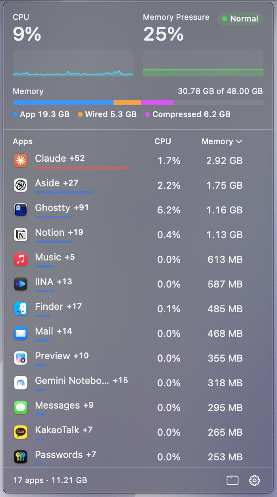
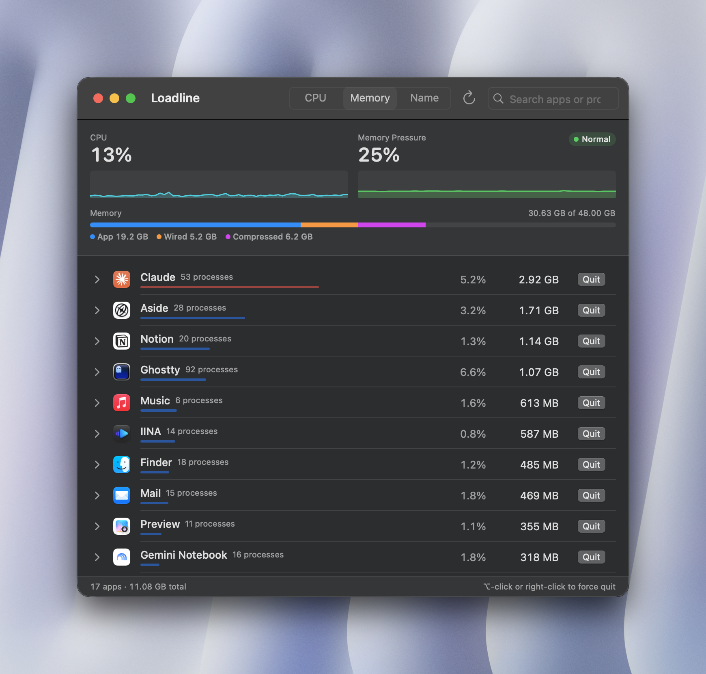

Loadline sits in your menu bar and shows which apps are using your CPU and memory, helper processes included. Quit the heavy ones in one click.

Safari's web content, Electron renderers, XPC services. Loadline counts them under the app that owns them, the way Activity Monitor does.
Each app's helper processes are grouped under the app, so the numbers reflect what it really costs.
Hover a row to quit an app. Hold ⌥ to force quit.
Show CPU and pressure, memory used, CPU only, or just the icon.
CPU and memory-pressure graphs, plus an App, Wired, Compressed and Swap breakdown.
Search, expand an app to see every process with its PID, and end individual helpers.
Checks for updates once a day. Launches at login if you want it to.
